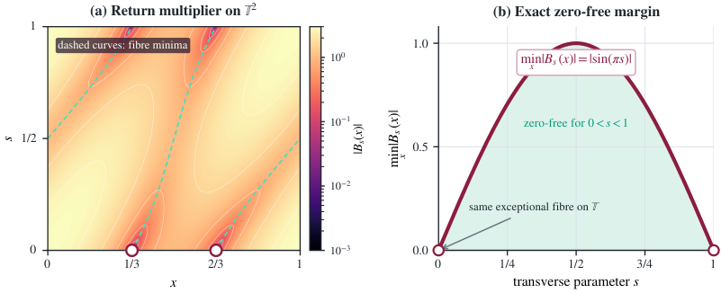

The main four-point HRT theorem and its full dependency chain, including the three-point HRT theorem, are formalized end-to-end in Lean 4 with Mathlib, with axiom audits.
Abstract
Although the Heil–Ramanathan–Topiwala conjecture is false in full generality, its failure makes the classification of positive geometric and arithmetic regimes more urgent. We settle the critical mixed-arithmetic regime for four time-frequency shifts. For \(z=(x,ω)\) and \(w=(y,η)\), set \(σ(z,w)=xη-yω\). Let \(u,v\in\R^2\) satisfy \(\lvertσ(u,v)\rvert=1\), write \(ν=αu+βv\), and assume that \(0,u,v,ν\) are distinct. If \(\dim_{\Q}\operatorname{span}_{\Q}\{1,α,β\}=2\) then, for every nonzero \(f\in L^2(\R)\), the vectors \(f,π(u)f,π(v)f,π(ν)f\) are linearly independent. This includes both four-point configurations in Chris Heil's Conjecture 9.2. The proof first converts a putative dependence into a scalar cocycle over an irrational rotation. On a positive-measure family of zero-free fibres, winding and continued-fraction returns force the periodic holonomy to be constant. The return multiplier is Laurent polynomial, however, so its ungauged holonomy is algebraic; the constant-holonomy law simultaneously makes it an irrational character. These conclusions are incompatible. The principal theorem and its complete formal dependency chain have been fully certified end-to-end in Lean 4, including the physical all-nonzero case, the complete three-point HRT theorem, the coefficient-reduction step, and the final four-point conclusion. The accompanying \href{https://www.dropbox.com/scl/fi/jd9xeqqera147wdc82r8k/3f260460-07d5-45f5-8d1c-ee1d2879c0af-aristotle-32-.tar.gz?rlkey=a24njadfds5ty9ez473lk03lv&e=1&dl=0} {Lean 4 certification archive} contains reproducible source, pinned build instructions, and transitive axiom audits.
Problem
The Heil–Ramanathan–Topiwala conjecture on linear independence of finite time-frequency shifts is false in general, so it matters which geometric and arithmetic regimes still satisfy it. The paper treats the critical mixed-arithmetic four-point regime, where |σ(u,v)|=1 and the rational span of {1,α,β} has dimension 2. This regime includes both configurations in Heil's Conjecture 9.2.
Approach
A putative linear dependence is reduced, via a symplectic normal form, to a scalar cocycle over an irrational rotation. On a positive-measure family of zero-free fibres, winding arguments and continued-fraction returns (using Denjoy–Koksma) force the periodic holonomy to be constant. The return multiplier is a Laurent polynomial, so its holonomy is algebraic, which contradicts the irrational-character law. The whole argument is certified in Lean 4.28.0 against a pinned Mathlib revision.
Results
For every nonzero f in L^2(R), the four shifts f, π(u)f, π(v)f, π(ν)f are linearly independent in this regime, which settles both cases of Heil's Conjecture 9.2. The Lean kernel checks the main theorem using only propext, Classical.choice and Quot.sound, with no sorry.

Figure 2. The return multiplier in the normalized equal-coefficient slice of Heil’s Conjecture 9.2(a). Panel (a) shows |B_{s}(x)| on a logarithmic colour scale. The dashed curves are the two exact minimizing branches, and the marked points (1/3,0) and (2/3,0) are the only zeros in the fundamental square. Panel (b) displays the exact fibrewise margin \min_{x}|B_{s}(x)|=|\sin(\pi s)| . It is strictl